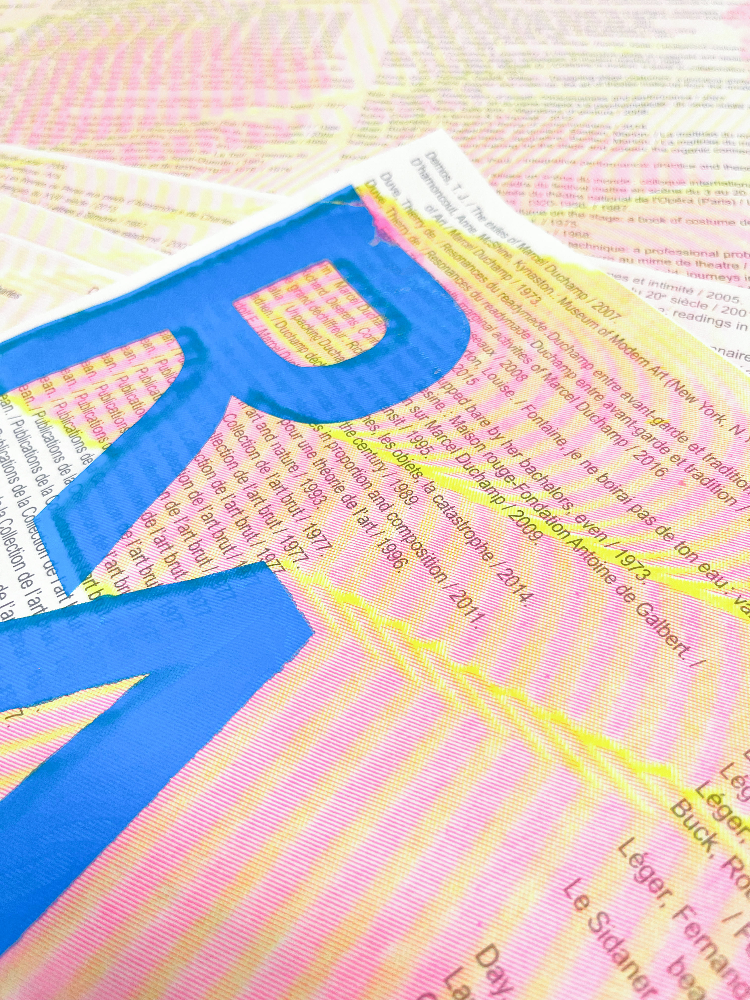
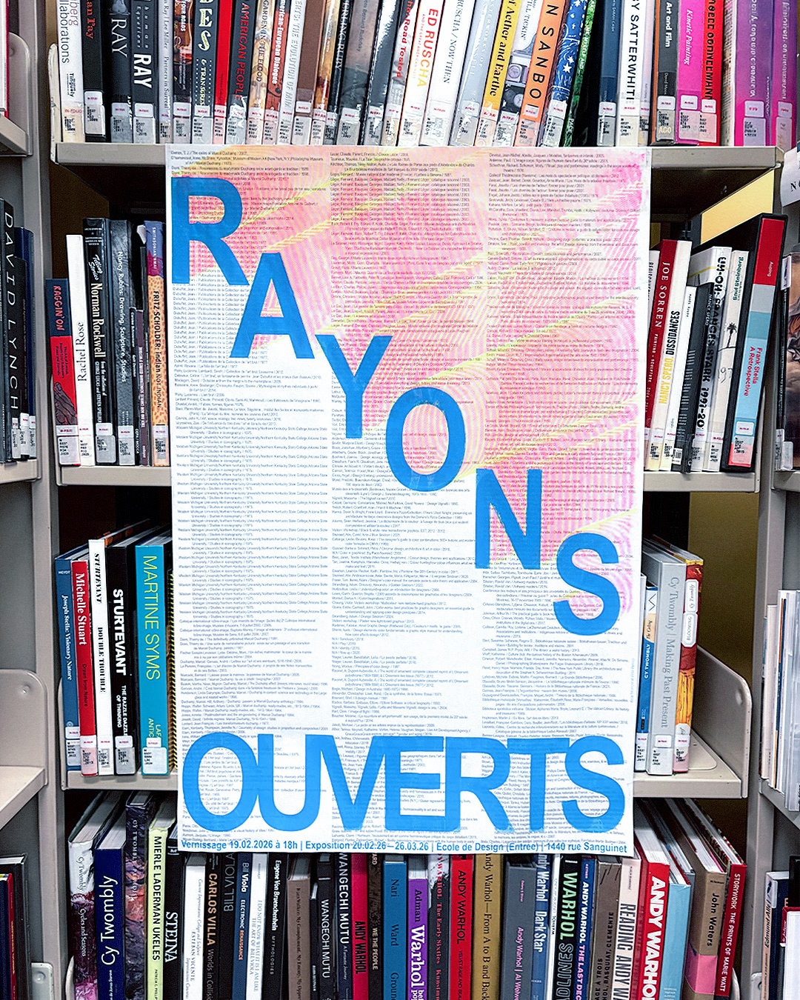
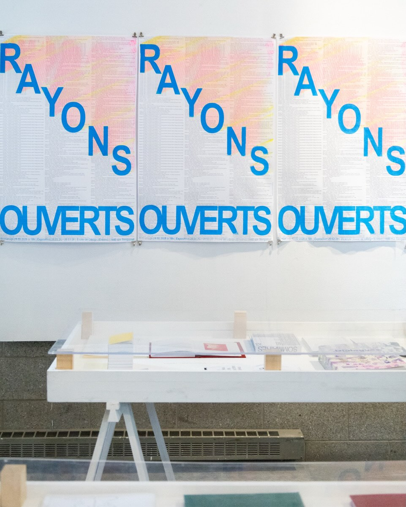
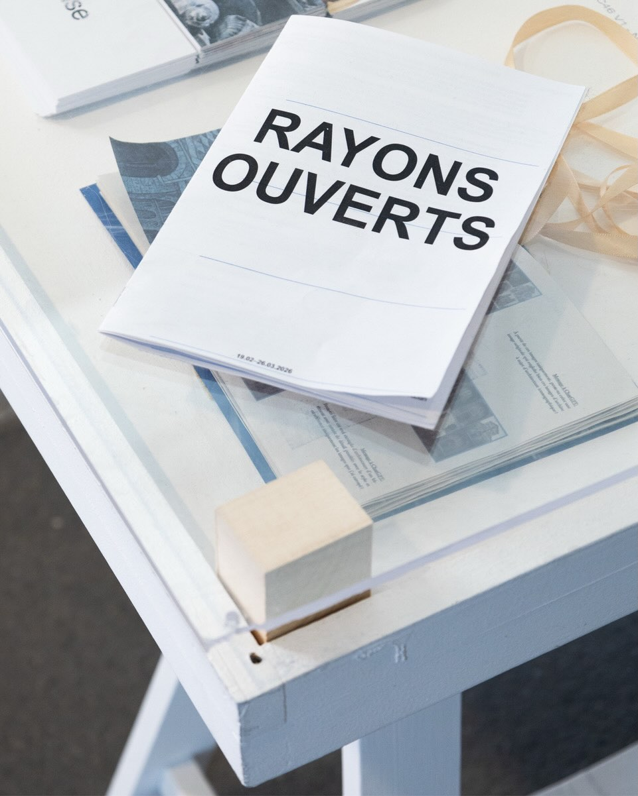
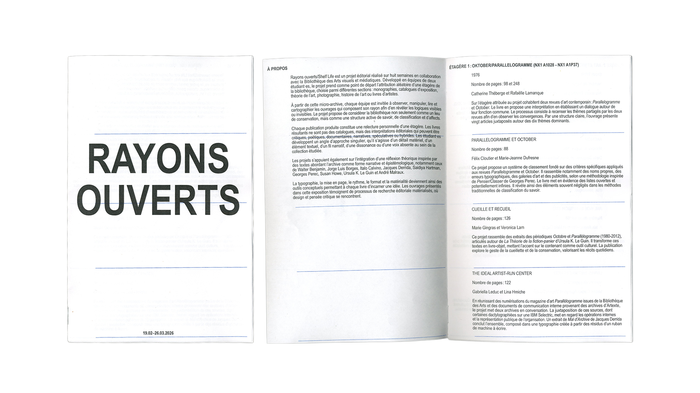
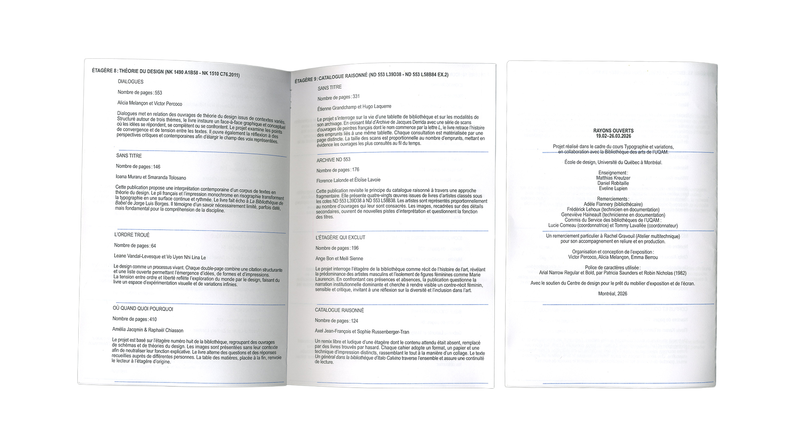

The Shelf Life / Rayons Ouverts 2026 visual identity was designed in collaboration with Alicia Melançon for the 2026 Typography Variations exhibition at UQAM's School of Design. Declined on a series of screen-printed posters and laser-printed pamphlets, the identity explores typographic neutrality as a framework for collective visibility. Typeset in Arial Narrow, the composition embraces a deliberately “default” aesthetic to foreground a plurality of student voices without hierarchy.




Overlaid layers of primary colors introduce moments of interference and blending, counterbalancing the system's rigidity with optical tension. The result negotiates between standardization and expression, positioning typography as both a container and an active agent in shaping shared discourse.



Credits
Brand identity:
Victor Percoco & Alicia Melançon
Photos: Laurie Vigneault